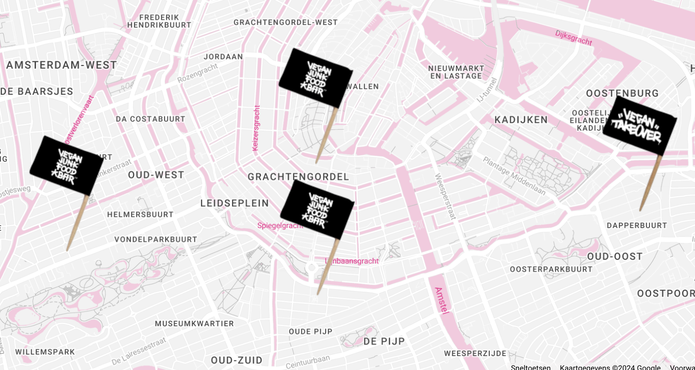

Wat is Vegan Junk Food Bar?
Vegan Junk Food Bar is een innovatief en populaire veganistische eetgelegenheid met vestigingen in Amsterdam en Barcelona, die bekend staat om het serveren van heerlijke, smaakvolle veganistische alternatieven voor traditionele fastfoodgerechten. De menukaart omvat een breed scala aan gerechten, variërend van veganistische burgers en loaded fries tot kleurrijke bowls en snacks.
Locaties in Amsterdam
Eerste van Swindenstraat 389 Amsterdam
Reguliersdwarsstraat 57 Amsterdam
Marie Heinekenplein 9-10 Amsterdam
Staringplein 22 Amsterdam
Wat maakt VJFB uniek?
Wat Vegan Junk Food Bar uniek maakt, is het vermogen om comfortfood op een plantaardige manier te presenteren, zonder concessies te doen aan de smaak of textuur. Het restaurant streeft ernaar om de veganistische keuken toegankelijk te maken voor iedereen, zowel voor degenen die al een plantaardige levensstijl omarmen als voor nieuwsgierige eters die willen genieten van heerlijke, duurzame gerechten.
Hun missie
Vegan Junk Food Bar heeft als missie om veganisme toegankelijk te maken door heerlijke, herkenbare alternatieven voor traditioneel junkfood te bieden.
Ze benadrukken duurzaamheid door mogelijk gebruik van milieuvriendelijke verpakkingen en het bevorderen van lokale, seizoensgebonden ingrediënten. Daarnaast streven ze naar bewustwording over de voordelen van een veganistische levensstijl, waaronder gezondheid, dierenwelzijn en milieuvriendelijkheid.
Hun missie draait om het genieten van voeding zonder concessies te doen aan smaak, waarbij ze laten zien dat veganisme niet alleen gezond, maar ook bevredigend kan zijn.